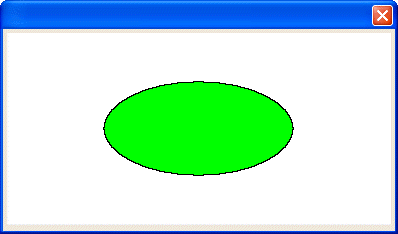

UI_SHAPE_DESTROY()
Syntax
UI_SHAPE_DESTROY( Shape_Name as C )
Argument | Description |
Shape_Name | The name of the shape to remove from memory. |
Description
The UI_SHAPE_DESTROY() function removes the named shape from memory. The following functions create named shapes: UI_SHAPE_OVAL(), UI_SHAPE_RECT(), UI_SHAPE_ROUND_RECT(), and UI_SHAPE_START_POLY().
Limitations
This function is only used in the Code sections of UI_BITMAP_DRAW(), UI_SCREEN_DRAW(), and UI_PRINTER_DRAW(). Desktop applications only.
Example
The following example would otherwise draw two ovals, except that code deletes the first oval shape before drawing the second.

ui_bitmap_create("test", 4, 2) ui_shape_oval("oval", 0, 0, 2, 1) ui_bitmap_draw("test", <<%code% inner_rect(0, 0, 4, 2) set_brush("green") fill_shape("oval", 1, .5) ui_shape_destroy("oval") fill_shape("oval", 0, .0) %code%) ui_dlg_box("", "{image=test}") |
See Also